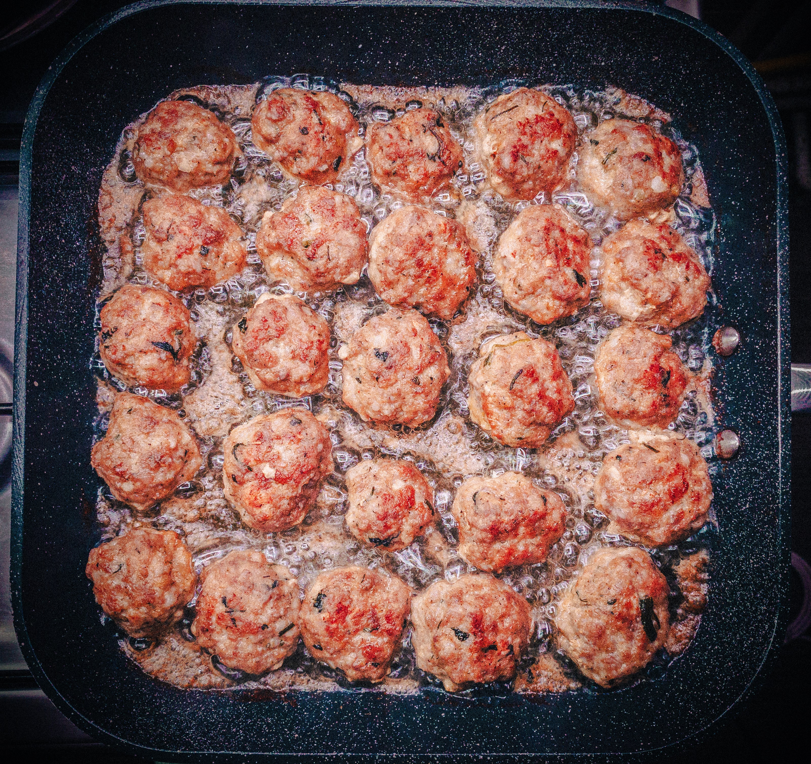

Asian Meatballs

Ingredients
- 2 pounds groundbeef
- 1 medium shallot minced
- 2 tbsp minced cilantro
- 8 medium fresh shiitake mushrooms minced
- 1 1/2 tbsp paleo friendly fish sauce
- 2 tbsp coconut oil melted
- 1/2 cup of bullion stock or bovril
- 2 tbsp tomato past
- 3/4 cup sweet potatoe minced
- pinch sea salt
- pinch fresh ground pepper
Directions
- Line baking sheet with foil and preheat oven to 375
- Combine mushrooms, shallot, sweet potato, and cilanto in large bowl.
- Add beef, fish sauce, and tomato paste.
- Season with salt and pepper to taste.
- Thoroughly combine the ingredients, do not over work the meat.
- Brush coconut oil on foil-lined baking sheet.
- with hands roll out three dozen meatballs around baking sheet.
- Bake for 15-20 minutes, rotating the tray at the midpoint.
- Serve with rice or rice noodles.